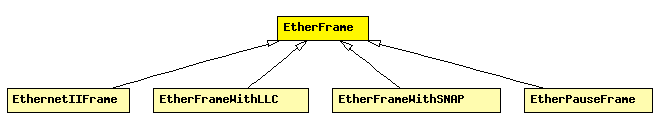

File: NetworkInterfaces/Ethernet/EtherFrame.msg
C++ definition: click here
Common base class for classes representing Ethernet II and 802.3 frame types, containing their common header fields.
This class should never be instantiated by the models, only specific subclasses: EthernetIIFrame, EtherFrameWithLLC and EtherFrameWithSNAP.
Source and destination MAC address are stored in data members. Other fields include:
The following diagram shows part of the inheritance hierarchy. Unresolved types are missing from the diagram. Click here to see the full picture.
| EthernetIIFrame | Ethernet II headers contain a 16-bit EtherType to identify the encapsulated protocol. |
| EtherFrameWithLLC | Ethernet frame with 802.3 LLC header. |
| EtherFrameWithSNAP | Ethernet frame with 802.3 LLC and SNAP headers. |
| EtherPauseFrame | Ethernet frame used by the PAUSE protocol |
| Name | Type | Description |
|---|---|---|
| dest | MACAddress | |
| src | MACAddress | MessageId id; -- uncomment for tracing frames |
message EtherFrame { fields: MACAddress dest; MACAddress src; //MessageId id; -- uncomment for tracing frames };